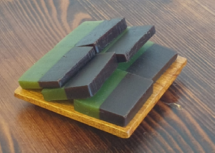

전하고 싶은 메세지를 캘리그라피에 담아 기분좋게 전하세요.
원하는 문구를 맞춤형으로 입력가능합니다.
마음이 담긴 문구로 정성을 보여드립니다.


양갱은 옛날 간식이다??
마음양갱에서는 양갱을 재해석하여 현대적인 간식으로 재탄생시켰습니다.
아이들이 좋아하는 초코, 딸기, 쿠키맛부터 어른들도 즐길 수 있는 감귤, 녹차 등
18가지 종류의 다양한 양갱을 선택할 수 있습니다.
전하고 싶은 메세지를 캘리그라피에 담아 기분좋게 전하세요.
원하는 문구를 맞춤형으로 입력가능합니다.
마음이 담긴 문구로 정성을 보여드립니다.